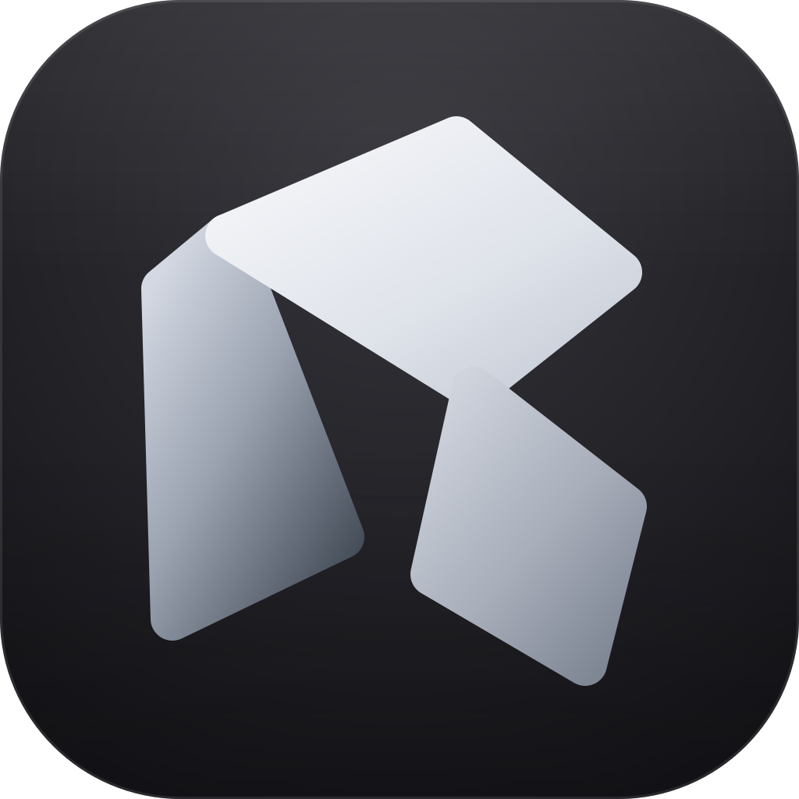

RigOneRigOne is a native macOS control room for coding agents. Define an agent once, place it on a canvas, connect the steps, and run the graph against a project. Claude Code and Codex are first-class peers.
Apple Silicon · macOS 13+ · signed, notarized and stapled · AGPL-3.0
Agent steps, local commands, checks, checkpoints, loops, conditional paths and retries — saved as a graph you can run again.
Independent branches overlap in time instead of taking turns behind a single worker. Order comes from the graph, never from the engine.
The plan on the left, what every agent said on the right, and the question that stopped the run pinned where you will answer it.
Vendor, model, reasoning depth, timeout, file access, tools, connections and skills — chosen once per role and reused everywhere.
Curate instructions and notes on disk, then see which context a run actually used.
Run receipts, attachments, handoffs, death proofs and a diagnostic bundle stay available after the output is gone.
RigOne treats orchestration failures as product failures, not terminal noise.